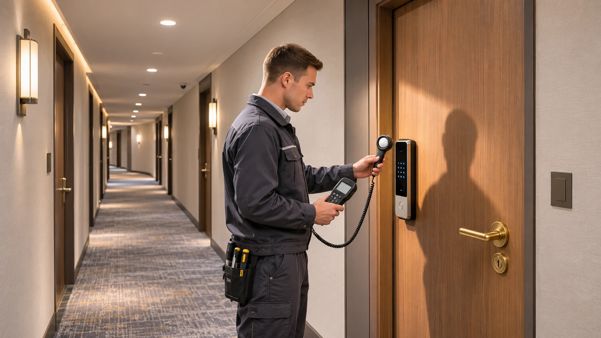
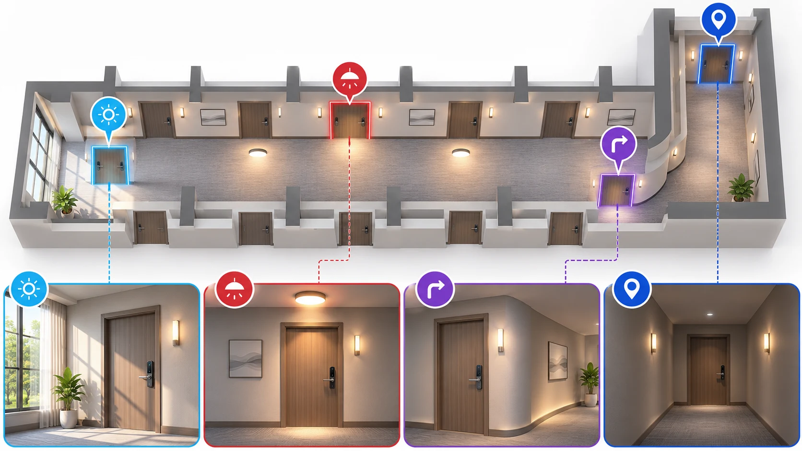

酒店走廊的灯亮着，并不意味着每扇客房门都能获得足够的补能。灯具位置、门锁朝向、遮挡、照明时长和锁具自身耗电都会影响实际结果。对于考虑弱光补能门锁的酒店，批量采购前更有价值的工作，是在真实门位上做一轮可记录、可复核的试点。
近期有关弱光自发电门锁的新品报道，让酒店门锁供电再次受到关注。下文讨论的是此类方案的现场评估方法，不代表所有产品都具备相同能力，也不预设任何型号可以免除换电维护。
先确定试点要回答的问题
试点的目标不是证明“走廊有光”，而是确认特定产品在特定门位和使用条件下，是否达到项目预先约定的运行要求。开始前，酒店与供应商应共同写下：
- 评估对象：锁具型号、硬件与固件版本、补能组件和储能配置。
- 现场条件：试点门位、照明计划、预期入住情况和锁具安装方向。
- 观察指标：可获得的电量或供电状态记录、开锁次数、异常事件和维护工作记录。
- 判定条件：观察周期、允许的供电异常、数据缺失处理方式及是否需要延长试点。
不要把一次实验室续航数据直接当成酒店现场承诺。试点结果只适用于所测试的配置和条件；扩大部署前还要核查其他门位是否可比。

酒店走廊门位取样示意，图中布局和比例并非实际项目资料。
挑选能代表差异的门位
不要只选距离灯具最近的样板房。先画出楼层平面图，记录灯具、门的位置与照明控制方式，再与运营和工程人员一起选点。可以覆盖以下几类：
| 门位类型 | 选择目的 | 现场要记录什么 |
|---|---|---|
| 靠近灯具的门位 | 观察相对有利的受光条件 | 灯具位置、光源方向、门锁表面受光情况 |
| 走廊末端或转角门位 | 观察较弱或不均匀的照明 | 灯光遮挡、门锁朝向、实际开灯时段 |
| 日间有自然光影响的门位 | 区分日间与夜间照明 | 窗户位置、遮阳变化、日照时段 |
| 使用频繁的门位 | 观察较高使用量下的运行情况 | 开锁次数、人员类型、异常及维护记录 |
每类门位的数量应根据酒店规模和资源确定，并在记录中注明选择原因。若不能覆盖某类条件，应在结论中列为未验证范围。
在门锁实际位置记录光照
使用照度计时，将测量位置和朝向尽量对应补能组件的实际受光面，而不是只测走廊地面或灯具正下方。记录设备、测量时间、单位、门位及照明状态；使用同一方法重复测量，便于比较。
建议覆盖白天、夜间、照明调暗及感应灯未触发等实际状态。对定时或感应照明，还要记录各状态持续多久，而不是只保留最高读数。必要时在不同日期重复，反映运营安排或自然光的变化。
**照度读数不能直接换算为锁具获得的电能。**光谱、入射角、组件响应、转换效率和储能损耗等都会影响实际收集结果。应要求供应商说明其测量方法和适用条件；如果缺少可验证的换算模型，就以现场运行数据评估，不自行推算续航。
同时记录用电和运行结果
光照数据只有与锁具实际使用情况放在一起才有意义。记录每个试点门位的观察起止时间、使用频率、供电状态、异常事件和人工干预。电量百分比、储能电压或补能量等信息是否可读取，取决于实际产品；无法取得时应如实标为“不可获得”，不要用估算值替代。
| 记录项 | 示例字段 | 用途 |
|---|---|---|
| 门位与配置 | 房间编号、朝向、型号、固件版本 | 确认结果对应的对象 |
| 光照 | 测量时间、照度、照明状态、持续时段 | 对照不同受光条件 |
| 使用 | 开锁次数或可获得的使用记录 | 解释不同门位的负载差异 |
| 供电状态 | 设备可读取的状态、低电量事件 | 观察是否触发预先约定的条件 |
| 人工干预 | 日期、原因、操作和停用时间 | 防止把干预后的结果当作自然运行结果 |
如果调整了灯光计划、更换部件、升级固件或改变使用方式，应记录变更时间。不要把不同配置下的数据混成同一组结果。
先约定观察周期和判断规则
观察周期应由酒店与供应商根据使用场景、可用数据和风险共同确定，并尽量覆盖照明与客流的典型变化。短期试点可以发现明显问题，却不能单独证明多年运行表现；遇到数据不足或季节性条件未覆盖，应延长观察或保留待验证结论。
结束时逐门位核对：记录是否完整、是否出现供电异常、是否有人工补救、使用强度与光照是否具有代表性。然后把结果分为“满足约定条件”“需要调整后重测”和“证据不足”。不要仅用平均表现掩盖弱光门位的问题。
若条件允许，可设置使用相近、记录方式一致的对照门位，并在方案中写清对照设备和目的。对照组有助于理解差异，但少量样本仍不足以代表所有楼层或项目。
将试点结论转为部署决策
试点报告至少应包含门位清单、设备配置、照明记录方法、观察数据、异常和干预、未覆盖条件，以及双方签字确认的结论。若不同门位表现差异明显，可先限定适用区域，再对其他区域开展补充验证。
电池选型、低电量预警、批量换电和应急开锁仍需纳入酒店既有维护方案；这些常规事项可参考多门智能锁项目的电池寿命与维护规划。弱光补能能否减少维护，应由实际产品资料和项目记录支持，不应直接宣传为“永不换电池”。
资料与适用边界
- 选题背景：佛山日报：佛企发布“会自己发电的锁”，2026 年 11 月 6 日。报道涉及具体新品，不应推广为所有产品的性能结论。
- 本文为现场评估框架，未声称 WAFU 现有型号支持弱光补能；实际功能、测量接口和测试条件均须按产品资料核实。